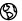

Europeana rezultāti
Europeana sadala meklēšanas rezultātus četrās galvenajās kategorijās: teksti, attēli, video un skaņa.
Katrā sadaļā ir iekļauti šādu vienību tipi:
- Teksti : grāmatas, vēstules, arhīva dokumenti, disertācijas, dzeja, avīžu raksti, faksimili, manuskripti un mūzikas partitūras.
- Attēli : gleznas, zīmējumi, gravīras, fotogrāfijas, muzeju eksponātu attēli, kartes, lietišķā grafika, plāni un mūzikas nošu raksti
- Video : filmas, ziņu pārraides un TV programmas.
- Skaņa : mūzika un ieraksti no cilindriem, lentēm, diskiem un radio raidījumiem.
Rezultātus ir iespējams attēlot sarakstā , vai uz laika joslas vai uz kartes . Jūs varat arī sagrupēt meklēšanas rezultātus pēc mēdiju tipa, valodas, datējuma, valsts, piegādātāja vai tiesībām, izmantojot izvēlni rezultātu ekrāna kreisajā pusē.
Papildus informāciju par objektu var iegūt, klikšķinot uz vienības rezultātu sarakstā. Lai skatītu vienību tās iespējami pilnīgākajā veidā (piemēram, jūs vēlaties lasīt grāmatu, skatīt pilna izmēra attēlu vai skatīties video ierakstu), klikšķiniet uz saites 'Skatīt vienību' kuru jūs atradīsiet aiz sīktēla. Saite aizvedīs uz organizācijas, kas piegādājusi objektu Europeana, tīmekļa vietni.
Personīgās vienības
Pēc meklēšanas klikšķini uz vienības, kuru vēlies apskatīt. Tas aizvedīs uz lapu, kur var apskatīt papildinformāciju par šo vienību.
- Tiesību un licences informācija
Zem vienības sīktēla attēla var atrast tiesību un licences informācija par šo konkrēto vienību.
Piezīme: pašlaik tikai par aptuveni 3 miljoniem Europeana vienību ir skaidras autortiesības. Šis skaitlis pieaugs, pilnveidojot mūsu metadatu kvalitāti un standartus.
- Līdzīgs saturs
Objekta apskates lapas apašējā daļā, zem 'Pārlūko tālāk!',vari aplūkot līdzīgu saturu vienībai, kuru pašlaik skaties. Attēlu karuselī ir izstādītas līdz pat 10 līdzīgām vienībām.
- Tulkot vienības detaļas
Ja vēlies tulkot vienības informāciju savā valodā, klikšķini 'Tulkot detaļas' augšā pa labi. Atvērsies logs, kurā vispirms ir jāizvēlas tulkojuma nodrošinātājs un pēc tam valoda, uz kuru vēlies veikt tulkojumu.
- Meklēt ārējos resursos
Vairākas vērtības (piemēram, , radītājs, datējums, tips) vienības metadatos - vienības aprakstā - ir klikšķināmas saites uz saistītiem meklēšanas rezultātiem. Ja vērtība ir atzīmēta ar mazu trijstūri, tas nozīmē, ka šo vērtību ir iespējams meklēt arī ārējos resursos. Klikšķinot uz trijstūra, atveras logs, kurā jāizvēlas ārējais resurss, kur vēlas veikt meklēšanu, piemēram, Wikipedia, IMDB, Google. Tas aizvedīs pie izvēlētā resursa meklēšanas rezultātiem.
- Saistītie Europeana meklēšanas pieprasījumi
Saites vienības metadatos - vienības aprakstā, kas nav atzīmētas ar trijstūri, aizved uz konkrētās vērtības meklēšanas rezultātiem Europeana ietvaros.
- Apskatīt vienību piegādātāja vietnē
Lai skatītu vienību tās iespējami pilnīgākajā veidā (piemēram, lasītu grāmatu, skatītu pilna izmēra attēlu vai skatītios video ierakstu), klikšķini uz saites 'Skatīt vienību', kuru jūs atradīsiet aiz sīktēla. Saite aizvedīs uz organizācijas, kas piegādājusi objektu Europeana, tīmekļa vietni. Tāpat, klikšķinot uz objekta sīktēla, jūs varat aplūkot objektu pilnīgākajā no tā pieejamajām formām.
Gadījumos, kad satura piegādātāji ir piegādājuši liela izmēra attēlu, ir iespējams klikšķināt arī uz lupas ikonas zem sīktēla attēla, lai apskatītu vienību pilnajā skata formā. Šeit tiek piedāvāta arī vienības tiesību informācija un funkcijas, kas ļauj objektu kopīgot un iegult.
Citas funkcijas
- Koplietot: tu vari ieteikt savas iemīļotākās vienības citiem pa e-pastu, Facebook, Twitter vai Google+, klikšķinot uz kādas no sociālo mēdiju ikonām, kas atrodas augšā pa labi. Klikšķinot uz pluss zīmes ikonas, var apskatīt papildu opcijas.
- Iegult: šī augšā pa labi novietotā funkcija palīdz ģenerēt HTML pirmkodu, lai vienību iegultu tavā vietnē vai blogā.
- Citēt Wikipedia: atrodas labajā pusē, aiz Iegult , šī funkcija palīdzēs veidot saites ar Europeana vienībām un citēt vienības Wikipedia rakstos. Klikšķini Citēt Wikipedia , lai ģenerētu kodu tiešai iekļaušanai Wikipedia rakstā autorēšanas veidā.
- Pieslēgties | Reģistrēties: un atkal - šī augšā pa labi novietotā funkcija aizvedīs tevi uz Mana Europeana - uz tavu personīgo Europeana lapu.